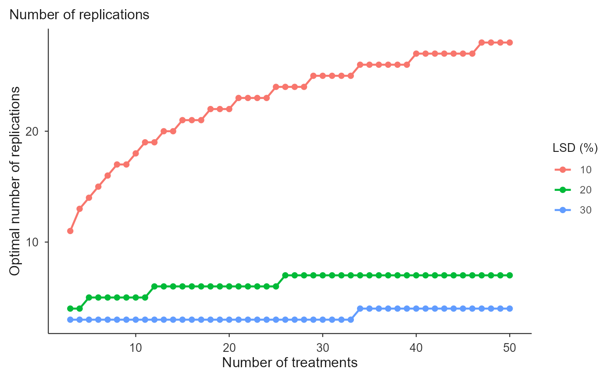

calc_replicates.RdEstimates the number of replications for CRD or RCBD experiments following Cargnelutti Filho et al. (2014), from the number of treatments, the experimental coefficient of variation, the least significant difference (LSD, as a percent of the mean) and the significance level, using the Tukey (studentized range) critical value.
calc_replicates(
treatments,
cv_percent,
lsd_percent,
alpha = 0.05,
design = c("CRD", "RCBD"),
tol = 1e-09,
max_iter = 1000
)numeric vector; numbers of treatments (>= 2).
single numeric; experimental CV (%), e.g. the CVxo from [fit_lrp()]/[fit_qrp()]/[fit_mcm()].
numeric vector; least significant differences (% of mean).
significance level for the Tukey test (default 0.05).
"CRD" or "RCBD".
convergence tolerance and iteration cap for the fixed point (defaults 1e-9 and 1000).
An object of class "replicates_fit": data (Treatments,
CV_percent, LSD_percent, Alpha, Design, r_continuous, r_optimal, df_error,
q_tukey, converged) and meta.
The required replications solve \(r = (q_\alpha CV / LSD)^2\), where
\(q_\alpha\) is the Tukey critical value. Since \(q_\alpha\) depends on the
error df, which depends on \(r\), the problem is solved iteratively. Two
readings are returned: r_continuous, the continuous fixed point (this
reproduces the published tables), and r_optimal, the practical
ceiling(r_continuous) floored at 2 (a design needs at least two
replications). Error df: \(t(r-1)\) for CRD and \((t-1)(r-1)\) for RCBD.
Cargnelutti Filho, A. et al. (2014). Tamanho de parcela e numero de repeticoes em aveia preta. Ciencia Rural, 44(10), 1732-1739.
## CV = 9.25% is the CVxo of the black oat trial (Cargnelutti Filho et al.,
## 2014). How many replications to detect a difference of 10% or 20% of the
## mean, for a few treatment numbers?
fit <- calc_replicates(treatments = c(5, 10, 20, 30), cv_percent = 9.25,
lsd_percent = c(10, 20), design = "CRD")
fit
#> Optimal number of replications
#> Design: CRD CV: 9.25% alpha: 0.05
#> Rows: 8 | Non-converged: 0
#>
#> Treatments CV_percent LSD_percent Alpha Design r_continuous r_optimal df_error
#> 5 9.25 10 0.05 CRD 13.50 14 65
#> 10 9.25 10 0.05 CRD 17.60 18 170
#> 20 9.25 10 0.05 CRD 21.77 22 420
#> 30 9.25 10 0.05 CRD 24.25 25 720
#> 5 9.25 20 0.05 CRD 4.06 5 20
#> 10 9.25 20 0.05 CRD 4.82 5 40
#> q_tukey converged at_floor
#> 3.968 TRUE FALSE
#> 4.534 TRUE FALSE
#> 5.044 TRUE FALSE
#> 5.323 TRUE FALSE
#> 4.232 TRUE FALSE
#> 4.735 TRUE FALSE
## r_continuous is the fixed point the published tables report; r_optimal is
## the practical ceiling, floored at 2.
fit$data[fit$data$LSD_percent == 10, ]
#> Treatments CV_percent LSD_percent Alpha Design r_continuous r_optimal
#> 1 5 9.25 10 0.05 CRD 13.50249 14
#> 2 10 9.25 10 0.05 CRD 17.60259 18
#> 3 20 9.25 10 0.05 CRD 21.77382 22
#> 4 30 9.25 10 0.05 CRD 24.25287 25
#> df_error q_tukey converged at_floor
#> 1 65 3.968034 TRUE FALSE
#> 2 170 4.534275 TRUE FALSE
#> 3 420 5.044232 TRUE FALSE
#> 4 720 5.323314 TRUE FALSE
## A randomized complete block design spends one df per block, so it needs
## slightly more replications than a completely randomized design.
rcbd <- calc_replicates(treatments = c(5, 10, 20, 30), cv_percent = 9.25,
lsd_percent = c(10, 20), design = "RCBD")
cbind(CRD = fit$data$r_optimal, RCBD = rcbd$data$r_optimal)
#> CRD RCBD
#> [1,] 14 14
#> [2,] 18 18
#> [3,] 22 22
#> [4,] 25 25
#> [5,] 5 5
#> [6,] 5 5
#> [7,] 6 6
#> [8,] 7 7
# \donttest{
## The full published table: every treatment number from 3 to 50, at three
## precision levels.
full <- calc_replicates(treatments = 3:50, cv_percent = 9.25,
lsd_percent = c(10, 20, 30), design = "CRD")
head(full$data)
#> Treatments CV_percent LSD_percent Alpha Design r_continuous r_optimal
#> 1 3 9.25 10 0.05 CRD 10.46134 11
#> 2 4 9.25 10 0.05 CRD 12.18380 13
#> 3 5 9.25 10 0.05 CRD 13.50249 14
#> 4 6 9.25 10 0.05 CRD 14.57736 15
#> 5 7 9.25 10 0.05 CRD 15.48715 16
#> 6 8 9.25 10 0.05 CRD 16.27710 17
#> df_error q_tukey converged at_floor
#> 1 30 3.486420 TRUE FALSE
#> 2 48 3.763749 TRUE FALSE
#> 3 65 3.968034 TRUE FALSE
#> 4 84 4.124617 TRUE FALSE
#> 5 105 4.251523 TRUE FALSE
#> 6 128 4.358180 TRUE FALSE
plot(full)

## A stricter test costs replications
calc_replicates(treatments = 10, cv_percent = 9.25, lsd_percent = 10,
alpha = 0.01)$data[, c("Alpha", "r_continuous", "r_optimal")]
#> Alpha r_continuous r_optimal
#> 1 0.01 23.42475 24
# }